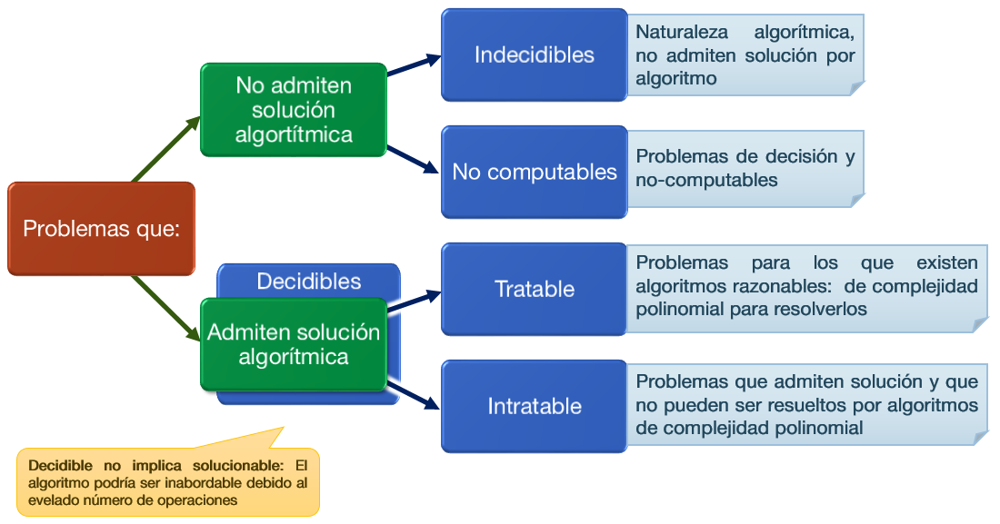
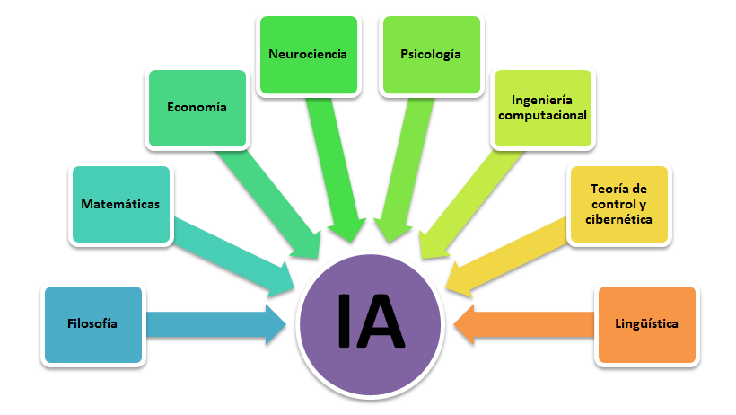
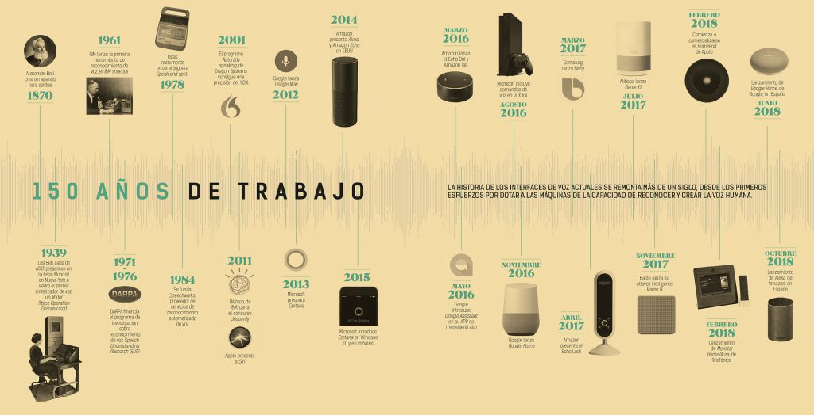
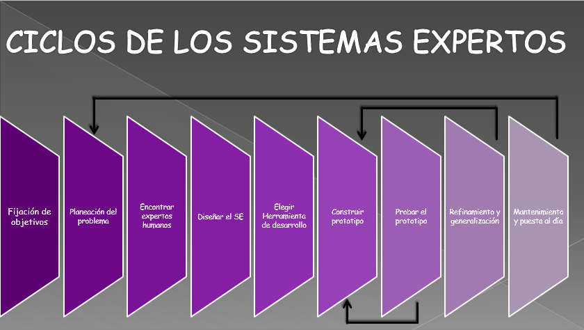
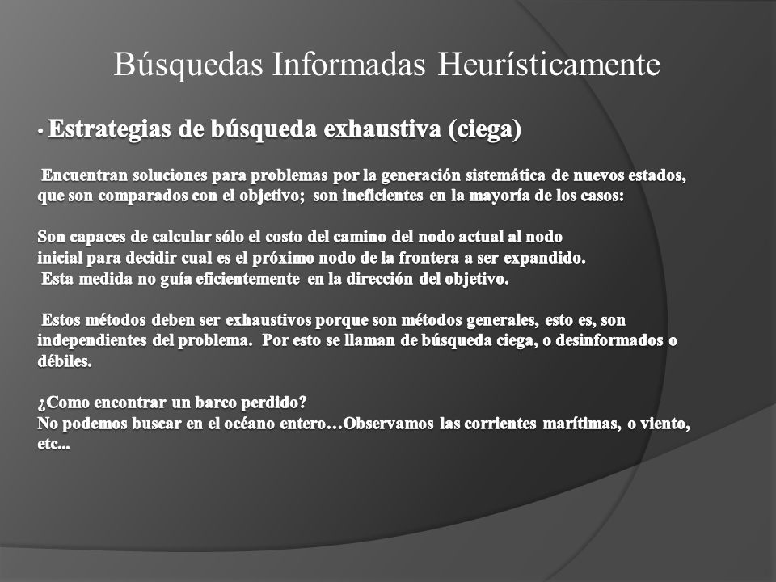

Curso de
Inteligencia Artificial
Desde Semana 1 hasta la Semana 16

 PDF
PDF
 PPT
PPT



Semana 16 : Examen Final
El Examen Final es la instancia de evaluación individual en la cual se define la aprobación de la asignatura por el estudiante. ... Para rendir el examen final de una asignatura el estudiante deberá cumplir con todos los requisitos académicos y administrativos establecidos por la facultad.
